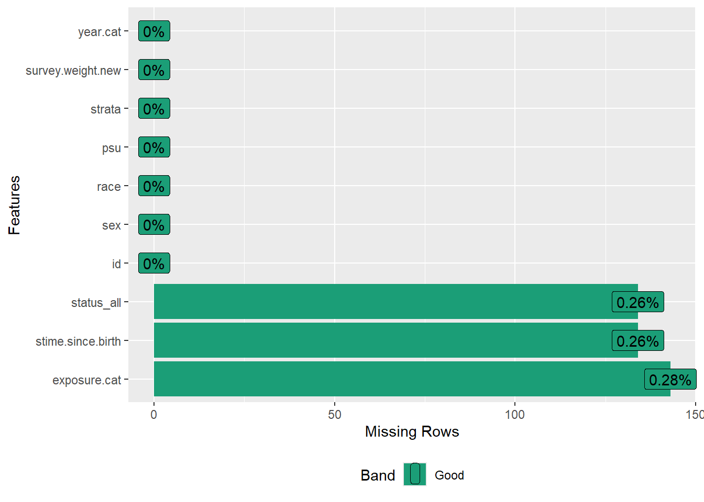
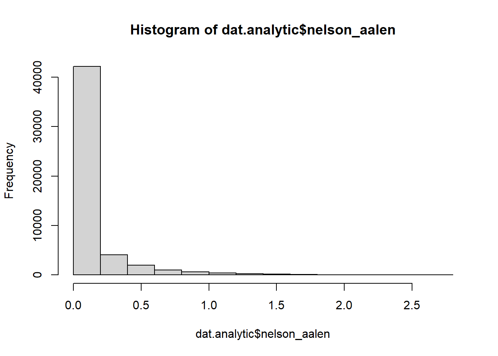

# Load all necessary packages for the analysis
library(dplyr)
library(car)
library(survival)
library(mice) # For imputation
library(survey) # For survey analysis (svydesign, svyglm, etc.)
library(mitools) # FOR imputationList() and other MI tools
library(Publish)
library(DataExplorer)
library(knitr)
library(kableExtra)
# devtools::install_github("ehsanx/svyTable1", build_vignettes = TRUE, dependencies = TRUE)
library(svyTable1) # for svypooledSurvival Analysis
Tip
We are going to use the data from a published article (Karim, Hossain, and Zheng 2025). The reproducible analysis codes are available here. The authors performed a complete-case analysis in that article, which was appropriate since only a very small number of participants (0.5%) were excluded due to missing data on the exposure or outcome variables before the final cohort was established.
This tutorial demonstrates how to perform a survey-weighted survival analysis using NHANES data when there are missing values in the predictors. Instead of relying on a complete-case analysis, which can lose statistical power and introduce bias, we will use multiple imputation with the mice package in R.
The workflow follows the structure of a standard epidemiological analysis:
- Data Preparation: Load and clean the raw data to create analytic variables and remove unnecessary columns.
-
Multiple Imputation: Use
miceto create multiple complete datasets, correctly specifying the imputation model for survival data. - Analysis & Pooling: Run the survey-weighted survival model on each imputed dataset and pool the results for a final estimate.
Setup
First, we load the necessary R packages. We then load the dat.full.with.mortality.RDS file (from here), which contains the merged NHANES and mortality data from 1999-2018.
3. Data Preparation and Cleaning
Before imputation, we must create the final analytic variables and clean the dataset. This includes creating the exposure, survival time, and status variables, and then dropping all unnecessary raw or intermediate columns.
# --- Create Analytic Variables ---
# 1. Exposure Variable ('exposure.cat')
dat.full.with.mortality$exposure.cat <- car::recode(
dat.full.with.mortality$smoking.age,
"0 = 'Never smoked'; 1:9 = 'Started before 10';
10:14 = 'Started at 10-14'; 15:17 = 'Started at 15-17';
18:20 = 'Started at 18-20'; 21:80 = 'Started after 20';
else = NA",
as.factor = TRUE
)
dat.full.with.mortality$exposure.cat <- factor(
dat.full.with.mortality$exposure.cat,
levels = c("Never smoked", "Started before 10", "Started at 10-14",
"Started at 15-17", "Started at 18-20", "Started after 20")
)
# 2. Survival Time ('stime.since.birth') and Status ('status_all')
dat.full.with.mortality$stime.since.birth <-
((dat.full.with.mortality$age * 12) + dat.full.with.mortality$mort_permth_int) / 12
# 'status_all' is our event indicator, derived from 'mort_stat'. It's essential for the Surv() object.
dat.full.with.mortality$status_all <- dat.full.with.mortality$mort_stat
# 3. Categorical Year ('year.cat')
dat.full.with.mortality$year.cat <- dat.full.with.mortality$year
levels(dat.full.with.mortality$year.cat) <- c(
"1999-2000", "2001-2002", "2003-2004", "2005-2006", "2007-2008",
"2009-2010", "2011-2012", "2013-2014", "2015-2016", "2017-2018"
)
# --- Define the Analytic Cohort & Drop Unnecessary Variables ---
# 4. Apply age restriction (20-79 years)
dat.analytic <- subset(dat.full.with.mortality, age >= 20 & age < 80)
# 5. Drop all raw, intermediate, or unused columns
vars_to_drop <- c(
"age", "born", "smoking.age", "smoked.while.child", "smoking", "year",
"mort_eligstat", "mort_stat", "mort_ucod_leading", "mort_diabetes",
"mort_hyperten", "mort_permth_int", "mort_permth_exm"
)
dat.analytic[vars_to_drop] <- NULL
# Verify the cleaned data
cat("Remaining columns for analysis:\n")
#> Remaining columns for analysis:
names(dat.analytic)
#> [1] "id" "sex" "race"
#> [4] "psu" "strata" "survey.weight.new"
#> [7] "exposure.cat" "stime.since.birth" "status_all"
#> [10] "year.cat"
plot_missing(dat.analytic)
#> Warning: `aes_string()` was deprecated in ggplot2 3.0.0.
#> ℹ Please use tidy evaluation idioms with `aes()`.
#> ℹ See also `vignette("ggplot2-in-packages")` for more information.
#> ℹ The deprecated feature was likely used in the DataExplorer package.
#> Please report the issue at
#> <https://github.com/boxuancui/DataExplorer/issues>.
Multiple Imputation with mice 🪄
We will impute the missing values in dat.analytic before running the final models.
Preparing for Imputation
We must include the survival outcome information in the imputation model. The best way to do this is by creating and including the Nelson-Aalen cumulative hazard estimate (White and Royston 2009).
# Create the Nelson-Aalen cumulative hazard estimate
# It's a more informative summary of survival than time alone
dat.analytic$nelson_aalen <- nelsonaalen(
dat.analytic,
time = stime.since.birth,
status = status_all
)
summary(dat.analytic$nelson_aalen)
#> Min. 1st Qu. Median Mean 3rd Qu. Max. NA's
#> 0.000000 0.006434 0.026145 0.122797 0.112218 2.763365 134
summary(dat.analytic$stime.since.birth)
#> Min. 1st Qu. Median Mean 3rd Qu. Max. NA's
#> 21.08 43.67 57.08 57.22 70.58 99.42 134
table(dat.analytic$status_all)
#>
#> 0 1
#> 44475 6215
hist(dat.analytic$nelson_aalen)
4.2 Configuring the Predictor Matrix
The predictorMatrix tells mice what to do. Here’s the logic for our setup:
-
What variable are we imputing?
exposure.cat
Since exposure.cat is the only predictor with missing data, it’s the only variable we will actively impute in this tutorial.
-
What about the missing outcome data?
- Data shows that
stime.since.birthandstatus_allalso have missing values. - It is standard practice not to impute the outcome variables in a survival analysis.
- Data shows that
-
What variables will help the imputation (i.e., act as predictors)?
-
Outcome Information:
status_allandnelson_aalen. These are crucial for making the imputation model compatible with the survival analysis. -
Confounders:
sex,race,year.cat. -
Auxiliary Variables:
psu,strata, andsurvey.weight.new. Including the survey design variables makes the imputation “survey-aware” and more accurate.
-
Outcome Information:
-
What variables will we ignore as predictors?
-
id(it’s just an identifier). -
stime.since.birth(its information is better and more simply captured bynelson_aalen).
-
# Initialize the predictor matrix
pred_matrix <- make.predictorMatrix(dat.analytic)
# --- DO NOT use these variables AS PREDICTORS ---
# We exclude the raw survival time and identifier variables from being predictors.
pred_matrix[, c("id", "stime.since.birth")] <- 0
# --- DO NOT IMPUTE these variables ---
# These variables are complete, identifiers, or part of the outcome.
pred_matrix[c("id", "sex", "race", "psu", "strata", "survey.weight.new",
"stime.since.birth", "status_all", "year.cat",
"nelson_aalen"), ] <- 0
# Run the imputation. m and maxit are low for demonstration
imputed_data <- mice(
dat.analytic,
m = 2, # Number of imputed datasets
maxit = 2, # Number of iterations per imputation
predictorMatrix = pred_matrix,
method = 'pmm', # Predictive Mean Matching is a good default
seed = 123 # For reproducibility
)
#>
#> iter imp variable
#> 1 1 exposure.cat* stime.since.birth status_all nelson_aalen
#> 1 2 exposure.cat* stime.since.birth status_all nelson_aalen
#> 2 1 exposure.cat* stime.since.birth status_all nelson_aalen
#> 2 2 exposure.cat* stime.since.birth status_all nelson_aalen
#> Warning: Number of logged events: 85. Survival Analysis on Imputed Data 📊
With our m=2 complete datasets, we follow the “analyze then pool” procedure:
-
Analyze: Run the
svycoxphmodel on each of the 2 datasets. -
Pool: Combine the 2 sets of results into a single, final estimate using
pool().
# --- 5. Survival Analysis on Imputed Data ---
# --- Step 5.1: Re-integrate Ineligible Subjects for Correct Survey Variance ---
# First, extract the 'm' imputed datasets into a single long-format data frame.
# Add a flag to identify this group as our analytic/eligible sample.
imputed_analytic_data <- complete(imputed_data, "long", include = FALSE)
imputed_analytic_data$eligible <- 1
# Next, identify the subjects from the original full dataset who were NOT in our analytic sample.
# The analytic sample was defined as age >= 20 & age < 80.
dat_ineligible <- subset(dat.full.with.mortality, !(age >= 20 & age < 80))
# Replicate this ineligible dataset 'm' times, once for each imputation.
ineligible_list <- lapply(1:imputed_data$m, function(i) {
df <- dat_ineligible
df$.imp <- i # Add the imputation number
return(df)
})
ineligible_stacked <- do.call(rbind, ineligible_list)
# Now, align the columns. Add columns that exist in the imputed data (like 'nelson_aalen')
# to the ineligible data, filling them with NA.
cols_to_add <- setdiff(names(imputed_analytic_data), names(ineligible_stacked))
ineligible_stacked[, cols_to_add] <- NA
# Set the eligibility flag for this group to 0.
ineligible_stacked$eligible <- 0
# CRITICAL: Ensure the column order is identical before row-binding.
ineligible_final <- ineligible_stacked[, names(imputed_analytic_data)]
# Finally, combine the imputed analytic data with the prepared ineligible data.
imputed_full_data <- rbind(imputed_analytic_data, ineligible_final)
# --- Step 5.2: Create Survey Design and Run Pooled Analysis ---
# Create the complex survey design object using an `imputationList`.
# This tells the survey package how to handle the 'm' imputed datasets.
# The design is specified on the *full* data to capture the total population structure.
design_full <- svydesign(ids = ~psu,
strata = ~strata,
weights = ~survey.weight.new,
nest = TRUE,
data = imputationList(split(imputed_full_data, imputed_full_data$.imp)))
# Subset the design object to include only the eligible participants for the analysis.
# This ensures variance is calculated correctly based on the full sample design.
design_analytic <- subset(design_full, eligible == 1)
# Fit the Cox model across all 'm' imputed datasets using the `with()` function.
# This is more efficient than a for-loop.
fit_pooled <- with(design_analytic,
svycoxph(Surv(stime.since.birth, status_all) ~ exposure.cat + sex + race + year.cat))
# Pool the results from the list of model fits using Rubin's Rules.
pooled_results <- pool(fit_pooled)
#> Stratified 1 - level Cluster Sampling design (with replacement)
#> With (301) clusters.
#> svydesign(ids = ids, probs = probs, strata = strata, variables = variables,
#> fpc = fpc, nest = nest, check.strata = check.strata, weights = weights,
#> data = d, pps = pps, calibrate.formula = calibrate.formula,
#> ...)
#> Stratified 1 - level Cluster Sampling design (with replacement)
#> With (301) clusters.
#> svydesign(ids = ids, probs = probs, strata = strata, variables = variables,
#> fpc = fpc, nest = nest, check.strata = check.strata, weights = weights,
#> data = d, pps = pps, calibrate.formula = calibrate.formula,
#> ...)
#> Stratified 1 - level Cluster Sampling design (with replacement)
#> With (301) clusters.
#> svydesign(ids = ids, probs = probs, strata = strata, variables = variables,
#> fpc = fpc, nest = nest, check.strata = check.strata, weights = weights,
#> data = d, pps = pps, calibrate.formula = calibrate.formula,
#> ...)
# Display the final, pooled results.
print("--- Final Adjusted Cox Model Results (from Pooled Imputed Data) ---")
#> [1] "--- Final Adjusted Cox Model Results (from Pooled Imputed Data) ---"
summary(pooled_results, conf.int = TRUE, exponentiate = TRUE)# Option A: Fallacy-safe table showing only the main exposure
svypooled(
pooled_model = pooled_results,
main_exposure = "exposure.cat",
adj_var_names = c("sex", "race", "year.cat"),
measure = "HR",
title = "Adjusted Hazard Ratios for All-Cause Mortality"
)| Characteristic | HR (95% CI) | p-value |
|---|---|---|
| exposure.cat | ||
| Started before 10 | 2.71 (2.05, 3.59) | <0.001 |
| Started at 10-14 | 2.37 (2.10, 2.68) | <0.001 |
| Started at 15-17 | 1.95 (1.77, 2.16) | <0.001 |
| Started at 18-20 | 1.48 (1.34, 1.65) | <0.001 |
| Started after 20 | 1.54 (1.39, 1.70) | <0.001 |
| Adjusted for: sex, race, year.cat | ||
# Option B: Full table for an appendix
svypooled(
pooled_model = pooled_results,
main_exposure = "exposure.cat",
adj_var_names = c("sex", "race", "year.cat"),
measure = "HR",
title = "Full Adjusted Model Results (for Appendix)",
fallacy_safe = FALSE
)| Characteristic | HR (95% CI) | p-value |
|---|---|---|
| exposure.cat | ||
| Started before 10 | 2.71 (2.05, 3.59) | <0.001 |
| Started at 10-14 | 2.37 (2.10, 2.68) | <0.001 |
| Started at 15-17 | 1.95 (1.77, 2.16) | <0.001 |
| Started at 18-20 | 1.48 (1.34, 1.65) | <0.001 |
| Started after 20 | 1.54 (1.39, 1.70) | <0.001 |
| sex | ||
| Female | 0.74 (0.69, 0.79) | <0.001 |
| race | ||
| Black | 1.60 (1.47, 1.74) | <0.001 |
| Hispanic | 1.04 (0.93, 1.16) | 0.493 |
| Others | 1.13 (0.96, 1.34) | 0.148 |
| year.cat | ||
| 2001-2002 | 0.97 (0.86, 1.08) | 0.538 |
| 2003-2004 | 0.84 (0.75, 0.95) | 0.004 |
| 2005-2006 | 0.76 (0.68, 0.85) | <0.001 |
| 2007-2008 | 0.78 (0.67, 0.90) | 0.001 |
| 2009-2010 | 0.67 (0.59, 0.78) | <0.001 |
| 2011-2012 | 0.63 (0.52, 0.77) | <0.001 |
| 2013-2014 | 0.58 (0.49, 0.70) | <0.001 |
| 2015-2016 | 0.35 (0.27, 0.46) | <0.001 |
| 2017-2018 | 0.20 (0.13, 0.29) | <0.001 |
6. Conclusion
This tutorial demonstrated how to replace a complete-case analysis with a multiple imputation workflow for a survey-weighted survival analysis. By correctly preparing the data, configuring mice with survival-specific information, and pooling the final results, we can generate valid estimates that properly account for missing data.
References
Karim, Mohammad Ehsanul, Md Belal Hossain, and Chuyi Zheng. 2025. “Examining the Role of Race/Ethnicity and Sex in Modifying the Association Between Early Smoking Initiation and Mortality: A 20-Year NHANES Analysis.” AJPM Focus 4 (2): 100282.
White, Ian R, and Patrick Royston. 2009. “Imputing Missing Covariate Values for the Cox Model.” Statistics in Medicine 28 (15): 1982–98.